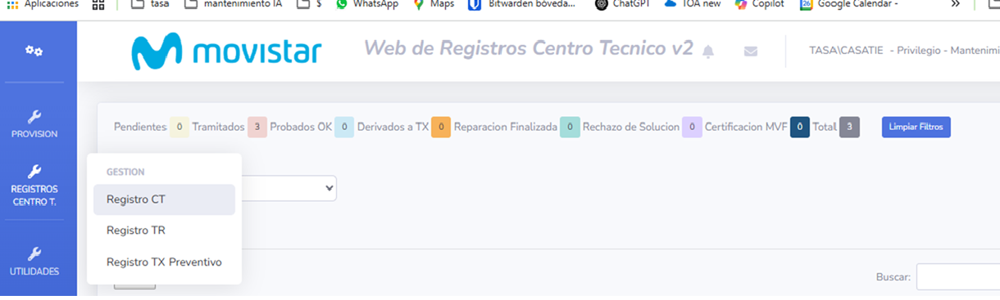
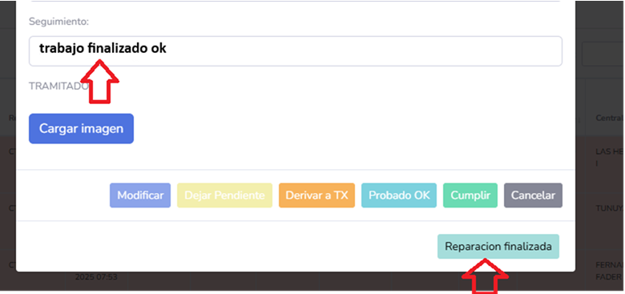

Apertura de Incidencias FTTH
Seleccione el tipo de incidencia para ver el procedimiento a seguir:
Enviar mail a GRUPO ALERTA ADSL MDQ: grupoalertamdq.ar1@telefonica.com (para realizar la prueba del CT), con copia a jefes y supervisores de guardia.
Acceder al siguiente enlace:
mdqweb2/wdr2/#  